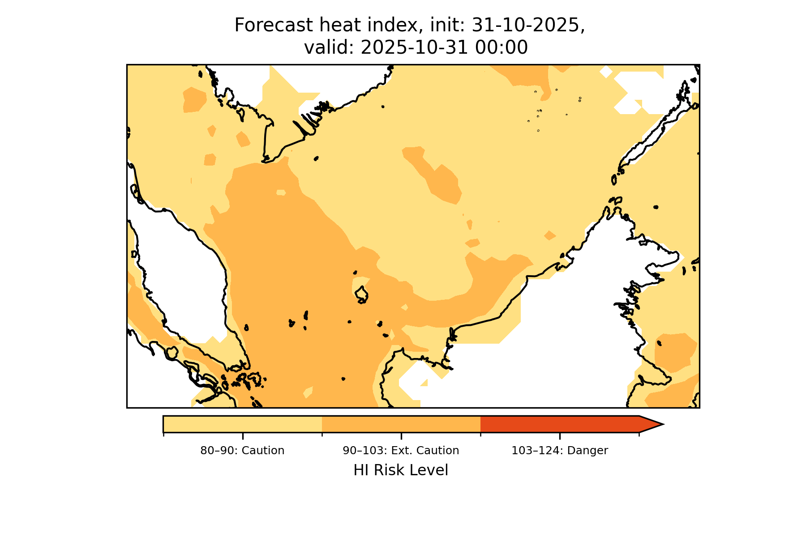

The Heat Index combines air temperature and relative humidity to estimate how hot it feels to the human body. This page shows the 3-hourly GFS forecast of the Heat Index over Malaysia for the next 5 days.
Values are color-coded into risk levels:
80–90°F: Caution — Fatigue possible with prolonged exposure.
90–103°F: Extreme Caution — Heat cramps and exhaustion likely.
103–124°F: Danger — Heatstroke possible with continued activity.
Use the slider to explore changes over time and monitor upcoming risk periods.

← Back to Landing Page